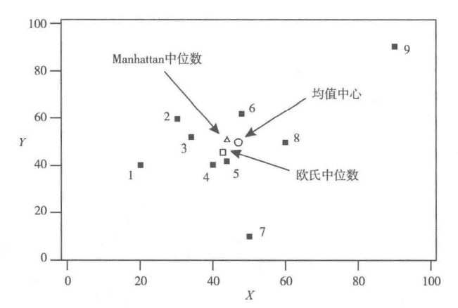
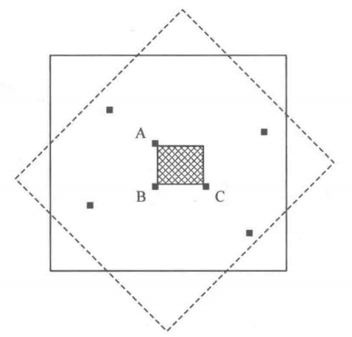
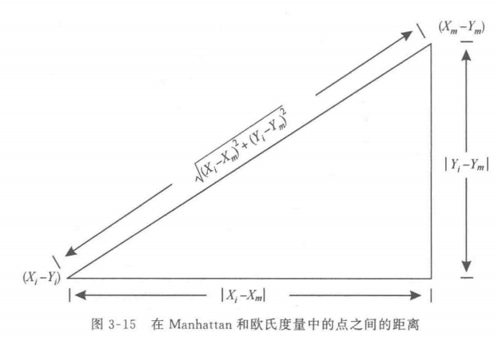
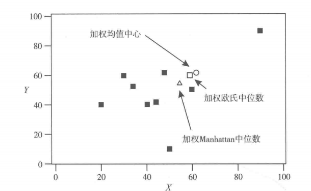
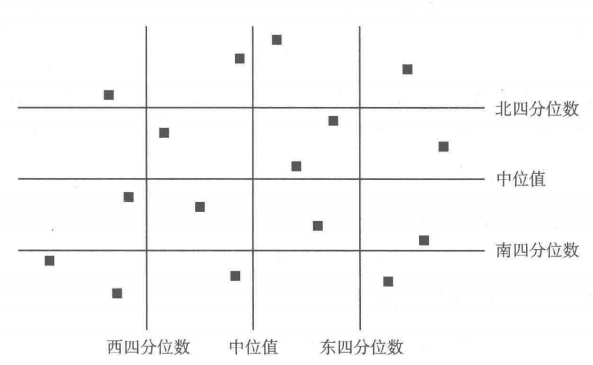

[空间分析]-叁·地理统计7
用统计来描述数据
为了使对变量描述更加精确，需要定量测量或者描述性统计方法。
集中趋势度量方法
中列数——两个端点的算术平均值。容易计算但是易受两个端点的影响。
众数——与分布峰值有关。
中位数
上四分位数、下四分位数
平均值——平衡点，点图上以平均值为中心，依据权重放置在一条直线上，每个观测值的权重取决于其与平均值之间的距离。分布在端点两侧的权重较大，靠近平均值的权重较小，为了平衡，均值左右两侧的权重总和必须要与该直线上权重相等。
选择恰当的方法研究集中趋势
对于标称数据，众数是反映集中趋势的唯一方法。
对于有序数据，中位数与众数有相同的作用。通常情况下，常常选择中位数。
对于定量数据，四种数据度量方式都可以，但是极少选择中列数，因为受观测值端值影响较大。
离差的度量方式
极差——一组观测结果的极差是指其最大值与最小值之差。与集中趋势度量方法的中列数相同。
四分位差——一组分布的第一四分位数与第三四分位数之差。鉴于极差仅仅依赖于分布的极端值，四分位差则采用分布的四分之一以度量离散性。所以大体上来说，四分位差是一个更为稳定的离散度量标准。同一总体的不同样本可能会有极为不同的离差，但是往往具有相似的四分位差。
无论是极差还是四分位差都没有很好的利用观察结果及其观测值的整体性。另外还有三个关于离差的度量可供使用，它们都利用了一个分布中所有的观测结果的值。由于这三个度量均以离差或每个观测结果与平均值的差距为基础，所以它们是相互关联的。该平均值被作为分布的中心，因为它是唯一最令人满意的集中趋势的度量。
平均偏差——有时平均值的偏差之和是零，即正负偏差相互抵消。导致基于平均偏差的离散计算中的一个问题——无论一个变量如何分布，其平均偏差之和始终为零。为了克服这一问题，平均偏差只关注偏差的绝对值。平均偏差被定义为
$$
\frac{1}{n} \sum_{i=1} ^{n} |X_i - \overline X|
$$标准偏差
样本标准偏差
$$
s = \sqrt{\frac{1}{n-1} \sum_{i=1} ^{n}(X_i - \overline X)^2}
$$
总体标准偏差
$$
\sigma =\sqrt{\frac{1}{N} \sum _{i=1}^{N} (X_i- \mu)^2 }
$$方差
样本方差
$$
s^2 =\frac{1}{n-1} \sum_{i=1} ^{n}(X_i - \overline X)^2
$$
总体方差
$$
\sigma^2 = \frac{1}{N} \sum _{i=1}^{N} (X_i- \mu)^2
$$
标准差和方差都可以表示出平均值实际上整体分布多么典型。这些度量越大，观测到的扩散和不典型平均值也越大。当所有的观察值等于平均值时，所有的偏差以及$s$和$s^2$均为零。比如算术平均值，标准差对于极值点十分敏感。因为它涉及偏差平方，标准差提供了更多相对权重较大的偏差。一个高度偏态分布或者几个几点观测将会有一个相对较大的标准差。通常情况下，偏态分布常用中位数和四分位数等数据汇总统计表示。
变异系数——一个带有样本均值$\overline X$和标准差$s$的变量分布的变异系数(CV)定义为
$$
CV= \frac{s}{X}
$$
对于总体，用$\mu$替代$\overline X$和用$\sigma$替代$s$可以得到相同的效果。因为$\overline X$和$s$用相同的单位被度量(即变量$X$的单位)，所以可以使用CV来比较不同的单位或尺度度量变量。
高阶矩及量测变量分布特性的其他数值方法
一个总体分布的特征参数有时也被称为总体的矩，关于平均值的r阶矩定义为
$$
m^r=E(X-\mu)^r= \frac {1}{N} \sum^N {i=1} (X_i-\mu)^r
$$
有关平均值的二阶矩是方差：
$$
m^2=E(X-\mu)^2=\frac {1}{N}\sum{i=1}^N (X_i - \mu)^2
$$
均值和方差是一个单变量的频率分布特性最常用的度量。然而有时，我们取一个分布的高阶矩来描述一个分布形状的其他特征。特别是对倾斜度的度量是基于有关的平均值的3阶矩，对峰度的度量是基于平均值的4阶矩。
偏度：
$$
\frac{1}{N \sigma^3}\sum_{i=1}^N(X_i - \mu)^3
$$
正态分布具有零偏态值，每个对称分布也是一样。偏度大于零的值指示正偏态。其中大部分变量的观测结果在平均值的左侧，因此相对较少的观测具有比平均值更高的值。偏斜度小于零的值表示负偏斜，此时变量的观测值小于平均值的数量比大于平均值的数量要小。
峰度：
$$
\frac{1}{N \sigma^3}\sum_{i=1}^N(X_i - \mu)^4
$$
峰度度量变量的频数分布分布在中心聚集的程度。当观测值紧密聚集，直方图显示出明显的峰，峰度度量倾向于大于3。当观测均匀地分布在中心值的不同方向，直方图相对平坦，峰度的度量倾向于小于3。
使用时序数据的描述性统计
从定义上来说，就是一串按时间维度索引的数据。用描述性的语言来解释什么是时序数据，简单的说，就是这类数据描述了某个被测量的主体在一个时间范围内的每个时间点上的测量值。对时序数据进行建模的话，会包含三个重要部分，分别是：主体，时间点和测量值。
时序数据通常用描述性统计量来获取额外的洞察时序的特征。尤其是，用于计算观测变量子集的集中趋势的方法可能会用来描述数据的平稳时序。
时序的平滑是一种用于抑制在时间变化中记录的变量值的波动的统计过程。平滑是常用于查明潜在趋势或时序中的周期性分量。平滑的序列和原始的时序之间的区别常被认定为随机分量。我们往往最感兴趣的是平滑或系统的时序分量，而不是围绕在它周围的随机波动。集中趋势的不同测量被用于执行数据平滑处理。
空间数据的描述性统计
面数据
不幸的是，除非我们愿意利用区域中心或者其他一些有代表性的点从而将面数据转换成点数据，否则对地区或者其他区域的统计描述通常无法获得数据的空间构成。然而再对离散区域单位，如县、市或省以及其他许多行政单位进行人口普查时，这种由图形和统计数据的汇总技术特别适用于等值线以及加强统计表图。
区位商——常用于进行地理和区位经济分析，并且它具有更加广泛的应用。区位商是一个用于比较一个地区的特殊活动在总体空间水平上所占有份额的指数。具体定义为：$j$区域内活动i的区位商等于$i$所占$j$区域总活动的百分比，即基础区域的总活动除以活动$i$，或者：
$$
LQ_i^j = \frac{A_i^j / \sum_{i=1}^n A_i^j}{B_i/ \sum_{i=1}^n B_i}
$$
式中$A_i^j$表示活动$i$在$j$区域占据的水平，$B_i$表示活动$i$在基础区域内的水平，$n$表示活动的数量。区域商可以用以下规则解释：
①如果$LQ>1$，则表明活动$i$在总区域相对集中于该区域一些。
②如果$LQ=1$，则表明该区域中活动$i$占据的份额可以代表总区域中活动$i$占据的份额。
③如果$LQ<1$，则表明该区域中活动$i$占据的份额低于总体观测值，或者说低于总区域的发现。
区域系数——区位商的一个缺点是，每个被分析的区域都需要计算一个值，对于一个也许有300或者更多普查人口的城市，即使是区位商已经被绘制出来，这也将是一种非常低效的总结形式。此时需要更有效的替代系数，区位系数($CL$)通过一个单一的数字来描述一个活动的相对集中度。具体定义：
区位系数($CL$)是对于某些区域中一个活动的相对集中度的测量，$CL$计算方法是：
①将基础或者研究区域作为一个整体，计算每一个区域中活动$i$的分布
$$
A_i^j/B_i
$$
其中，$j=1,2,3,…,m$，$j$代表区域；②计算每一个区域在总区域或者研究区域内活动中占有的份额：
$$
\sum_{i=1}^n A_i^j / \sum_{i=1}^n B_i
$$
③对于每一个区域$j$，将步骤①所得的值减去步骤②中的值，得到正负差异，$CL$是正或者负差异的总和。区位系数值的范围是0到1。$LQ$的取值是0到正无穷，两者是不同的。如果$CL=0$，这说明给定的活动均与分布于整个区域的总活动中。如果$CL=1$，那么说明该活动集中于一个地区。
洛伦茨曲线是另外一种表示空间单元之间变量分布的方式，虽然它通常被用来衡量一个变量在空间范略内不平等分布的程度。
例如，如果一个国家的居民拥有相同的收入，那么收入是平等的。但是，如果一个国家包含富人和穷人，那么收入分配上就存在着一地不平等。这是一个对于面数据十分形象的比输。一个活动可以集中于一个或者几个区城，也可以在一个区域中均匀分布。洛伦茨曲线就是对这种不平等程度的图形化显示。
运用区位商以及区位系数，洛伦茨曲线将某些活动的空间分布和基础分布进行比较，洛伦茨曲线通过以下规则进行构造：
①计算各个区域的区位商，包括研究区域，按区位商将各地区降序排列。
②按照步骤①中确定的目标活动以及基础活动的顺序计算累积百分比。
③作出目标活动以及基础活动的累积百分比，并加入点以产生一个洛伦茨曲线。
洛伦茨曲线有几个重要的性质。如果我们感兴趣的活动是均勾分布在研究区域的，那就是说与基础活动是成比例的，那么洛伦茨曲线是一条45°的斜线。活动越集中，洛伦茨曲线越接近于一条斜线。在极限情况下，曲线沿X轴到达点(100，0)，然后垂直地到达点(100，100)。除了完全均匀分布的活动之外，洛伦茨曲线的斜率是不断增加的，这直接遵循了地区的$LQ$排序。
最常与洛伦茨曲线结合使用的汇总方式是基尼系数，也称为差异性指数。基尼系数的取值范围是0到100%。有两种方法计算这一指数，首先它可以通过目标活动和基础活动的累积百分比的最大差异确定。
基尼系数或差异性指数是指图形化的洛伦茨曲线和对角线之间的最大垂直偏差。
基尼系数或者CL的值较小则表明感兴趣的活动与所有活动在空间分布上存在相似性。这就是基尼系数为什么有时被称作差异性指数。
洛伦茨曲线和基尼系数也可以用来衡量任何两个活动的百分比分布的相似程度，而非一定要与所有活动相比较。
基尼系数可以在城市社会地理学中用来比较民族群体的空间分布。民族群体空间分布的相似性是评价其融人社会的一个有效指标。随着时间的推移，同化的发生，许多民族住宅隔离变得不再明显。基尼系数可以用来验证这一一假设。
点数据
所有用于面数据分析的方法同样适用于空间数据和非空间数据。然而，每一个方法都未能明确地将空间维度通过一个与变量相关的基本空间概念距离、方向或相对位置得以具体化。对于点数据的分析，这是不正确的统计方法。而对于距离以显式或隐式包含在这些方法中，这一分支我们称其为统计地理学。
集中趋势的度量
首先，点分布的中心或者平均值是多少?用地理统计学的术语来说就是，地图上这些点分布的中心在哪?为了确定地图的中心，我们使用以下5种方法:均值中心、加权均值中心、Manhattan 中位数、欧氏中位数、加权中位数。
由于在地理文献中，这5种方法的性质往往被错误地陈述或者没有被充分判定，本节将对此进行仔细研究。
①均值中心
均值中心可以认为是点分布的“重心”，它是算术平均值的一个简单概括，很容易计算。
均值中心的定义：将n个点的坐标表示为$(X_i,Y_i),i=1,2,…,n$，该点分布的均值中心为$(\overline X , \overline Y)$，其值为

$$
\overline X=\frac{1}{n} \sum^n _{i=1}X_i \ ,\ \overline Y=\frac{1}{n} \sum^n _{i=1}Y_i
$$②加权均值中心
均值中心也可以关联地图上的每个点的频率、幅度和“权重”。
加权均值中心的定义：令n个点的坐标为$(X_i,Y_i),i=1,2,…,n$，令$w_i$代表第$n$个点的权重，加权平均值的坐标$(\overline X_w , \overline Y_w)$为
$$
\overline X=\frac{\sum^n _{i=1} w_i X_i}{\sum^n _{i=1} w_i} \ ,\ \overline Y=\frac{\sum^n _{i=1} w_i Y_i}{\sum^n _{i=1} w_i}
$$
③Manhattan中位数中位数的概念也可以应用于点分布。对于一组n个观测值，中位数被定义为“中间”或者对于一组有序数据的第$(n+1)/2$位观测值。我们如何寻找点分布中的中位数？这个意义上的空间中位数是两条垂线的交点一—平分南北和东西两个方向的垂线。
Manhattan中位数出现了两个明显的问题。
第一，当我们试图确定一组含有8个观测值分布的中位数时，根据定义，我们需要找到一条在南北方向上将两边各划分为4个观测值的直线，就像图中，任何在点A和C之间的垂线都将两侧分为4个点。类似地，点A和B之间的任一条水平线都将该组分为两个相同的部分。图中的阴影部分包括了所有具有Manhattan中位数特性的所有点，显然这并不是一个唯一的点。是哪里出错了吗？事实上是，当点的数量是偶数时，Manhattan中位数不唯一，而当点的个数是奇数时，Manhattan中位数唯一。
该方法的第二个问题也可以用图来说明。假设地图的坐标被转移（转换）到虚线显示的位置，那么阴影部分定义的中位数会发生什么变化？它必须以同样的方式旋转，这将定义另一个直角坐标区域，因此在这个旋转轴下，Manhattan中位数的位置不唯一。
从统计学的角度来说，这是不可取的。
Manhattan中位数与频率分布的中位数有一条相同的性质，在频率分布中，中位数与其他n个观测值之间的距离绝对值之和最小。
Manhattan中位数定义: 令n个观测值的坐标为$(X_i,Y_i),i=1,2,…,n$，Manhattan中位数$(X_m ,Y_m)$使得下式最小：
$$
\sum _{i=1}^n (|X_i - X_m|+|Y_i - Y_m|)
$$
也就是说，Manhattan中位数$(X_m ,Y_m)$到$n$个观测值的绝对距离之和最小。为什么被称为Manhattan中位数？想象一下，我们试图在一座城市定位一些设施，但这座城市限制南北和东西方向的通行，即无法像鸟儿在天上飞一样自由穿行。如图3-15所示，点$(X_i,Y_i)$和点$(X_m ,Y_m)$之间的Manhattan距离是$|X_i - X_m|+|Y_i - Y_m|$。绝对值的符号是用来确保计算的距离是非负的，空间距离的这种度量方法与在密集的矩形网格街道网络中移动有着密切的联系，尤其是Manhattan，因此命名为Manhattan公约或者Manhattan中位数。需要注意的是，两点之间的Manhattan距离总是比用勾股定理计算得到的距离要大，除非这两点位于南北线或者东西线上。我们将运用勾股定理求的距离称为欧几里得距离。
④欧氏中位数
我们知道，在空间分布中，Manhattan中位数到$n$个观测点的Manhattan距离之和最小，那么我们会问，哪个点使得到同样$n$个观测点的欧氏距离最小呢？
欧氏中位数定义: 令n个点的坐标为$(X_i,Y_i),i=1,2,…,n$，欧氏中位数的对应坐标为$(X_e ,Y_e)$，并且使得下式最小
$$
\sum_{i=1}^n \sqrt{(X_i - X_e)^2+(Y_i - Y_e)^2}
$$
欧氏中位数的位置很接近均值中心和Manhattan中位数，但不重合。⑤加权中位数
正如均值中心可以一般化为加权均值中心值，欧氏中位数和Manhattan中位数也一样。加权Manhattan中位数是指上下左右的权重相等。不同于未加权的部分，问题的非唯一性并不是那么常见。相对于Manhattan中位数，地理学家更在意加权欧氏中位数。
加权欧氏中位数定义: 令平面上一组点的坐标为 $(X_i,Y_i),i=1,2,…,n$ ，对于每一个点都有一个附加的权重 $w_i$ ，加权欧氏中位数 $(X_{we} ,Y_{we})$ 使得下式最小：

$$
\sum_{i=1}^n w_i \sqrt{(X_i - X_{we})^2+(Y_i - Y_{we})^2}
$$这个问题也可以视为公共设施选址决策问题。给定设施使用者的位置，例如学生，那么学校的最佳位置是哪里呢？权重可以定义为一个街区内适龄儿童的数量，最小化对象可以定义为学生到学校的总路程最小，同时也使得儿童走过的平均距离最小，加权均值中心使得学生走过的距离平方和最小。鉴于我们关注的是他们行走的距离而不是距离的平方，所以加权欧氏距离是最简单的解决方法。
定位空间中位数的问题是许多私营和公共设施选址问题的基石。确定整个设施的位置这一复杂问题已经引起了地理学家极大的关注，例如，对于潜在用户，5所学校的空间分布问题，我们称之为位置分配问题。一旦确定了一组设施的位置，消费者或者顾客会被分配到最佳，一般是距离最近的场所。下图显示了5个场所的最佳位置选择，韦伯问题的这一简单延伸被称为多源韦伯问题。现在有许多关于位置分配问题方面的理论以及对学校、医院和其他设施系统的实践类文献。在许多文献中，由于欧氏距离在现实中是不切实际的，因此我们经常使用网格距离的变形方法。

离散程度的测定
除了对集中趋势的度量，空间分布的第二个重要特征是它的离散程度。在描述性统计中，离散性通常是基于离差的概念，各点与一个中心值，如均值或中位数之间的差距。在空间分布中，离差的概念是指观测点与中心点之间的实际距离。
①标准差距离
空间统计中，标准差距离对应常规统计的标准差。
标准差距离定义：令n个观测值的坐标为$(X_i,Y_i),i=1,2,…,n$，标准差距离被定义为
$$
SD= \sqrt{\frac{1}{n} \sum_{i=1}^n(X_i- \overline X)^2 + \frac{1}{n} \sum_{i=1}^n(Y_i- \overline Y)^2 }
$$
②四分位法离散性可以通过四分位差的空间距离等价形象地表现出来。四分位计算法将一个点的分布四等分。围绕着中值分别是东、西、北与南。它们一同定义了一个矩形，其大小无疑取决于该点集的分布。图中给出了n=16时点集分布的一个例子。在该例中，非唯一性的问题出现了，这是因为这些具有偶数个观察结果的点的中心值是一个区域。中心值的东边和西边都对应有8个点。许多线段满足这一准则。这儿被选中的一条位于两个中心观察结果的中间。相似地，南北方向上指出中位数的线段位于这一方向上两个中心观察结果的中间。定义四分位法时遵循同样的原则。东四分位处于靠近最东边第4个和第5个观察结果中间，西四分位处于靠近最西边第4个和第5个观察结果中间，等等。四分位法得到的矩形越大，点越离散。四分位法在地理文献中并不常见。
③实证研究法
有效地描述一组点分散情况的实证研究法是以曲线图表示中央区域一定距离处点的累积频率。例如，图b中以这种方式总结了图a的数据。容易发现，80%的点位于距离均值中心6英里远的位置，20%的点位于距离2英里远的位置，诸如此类。

均匀分布是一个有用的统计量——如果点集中于均值中心周围均匀散布，那么该百分比是在预料之中的。对于一个均值中心，给定半径的圆内包含点的数量关于圆的面积是成比例的。又因为圆的面积与半径的平方是成比例的，所以在图b的曲线图中，均匀分布并非呈现为一条直线。那么距离其均值中心6英里远的点占80%的均匀分布应以何形式呈现呢？由于方圆4英里构成的区域面积为$\pi·4=16 \pi$，方圆6英里构成的区域面积为$\pi·62=36\pi$，于是我们预计在4英里半径范围内，含有点的数量为6英里内的一。类似地，均匀分布在2英里内含有点的数量为6英里内的$\frac{16 \pi}{36 \pi}=\frac{4}{9}$。比较得出，观察$36\pi$到的点分布比均匀分布在3英里范围内集中程度较大，而在3英里外集中程度较小。
虽然集中趋势与离散的度量方法能够帮助我们对不同的点分布进行简单比较，然而它们对于点分布的真实情况只提供极为有限的信息。有些点为均匀分布，在地图上各个区域或多或少都有点的分布。而其他类型的点分布则非常集中，在地图上某一区域有许多点，然而其他大部分区域则空无一点。一个随机分布既含有均匀分布的元素，又含有集中分布的元素。